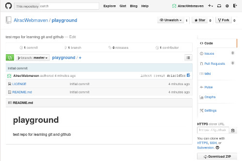
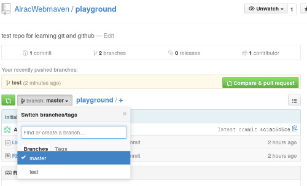
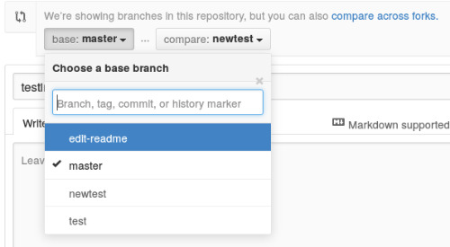

也紀念我們永遠的朋友 李士傑先生（Shih-Chieh Ilya Li）。
給 Linux 使用者的 Git 與 Github 初體驗
** 本文翻譯自 linux.com，原作者為 Carla Schroder：https://www.linux.com/learn/tutorials/796387-beginning-git-and-github-for-linux-users/

▲圖一：Github 是練習 Git 的好所在。
Git 分散式版本控制系統，是我們使用了 Subversion, CVS, Mercurial 或其他版本控制系統之後的一個貼心的躍進。當有多位開發者共同開發一個專案時，Git 是一個非常棒的分散式開發工具，開發者們可以天馬行空地改程式，而不用擔心會改到爛掉。這篇文章中，我們要嘗試使用 Github 帳號來練習，並進入 Git 的世界中。
Git 在概念上是不同於其他的版本控制系統的。舊的 RCS (Revision Control System) 追蹤透過檔案來記錄版本的改變，而 Git 是類似製作檔案系統的快照 (snapshots)，取代原有用檔案記錄所有版本變更的差異 (diffs)。Git 因此節省了很多的硬體資源，而你可以更不用擔心這些數據的完整性，且隨時可以回復程式碼到未變更前的狀態。
Git 非常的快速，因為你都是在本機變更你的程式碼，並推送 (push) 到遠端的程式庫 (repository) 中。這個設定讓你對程式碼所做的任何更動都非常安全，因為在你 push 自己的程式碼之前，怎麼改程式都不會影響到遠端的程式碼。Git 的分支 (branch) 系統更是出色，在你自己的主幹 (master branch) 上創造一個分支，並隨心所欲地做任何實驗，然後選擇炸掉 (nuke) 或是推送它到上游 (upstream) 的分支 。當上游的其他開發者都可以運行你寫的程式，或者你也可以創造一個推送請求 (pull request) 來讓大家看看你寫的程式，通過之後它便會合併到主幹上。
那，如果還是不小心把主要的程式碼搞砸了怎麼辦？沒關係！你隨時可以把你合併的分支回復到未合併的狀態。
在 Github 上練習
最快的 Git 練習，就是直接到 Github 上免費開一個帳號！圖一是我的 Github 測試，命名為 playground。新的 Github 帳號預設有一些檔案：README 檔、授權檔案，和快速回報 bug、創造推送請求、文件共筆 (Wiki)，和其它非常有用的功能。
免費的 Github 帳號只允許公開的程式庫，也就是允許任何人看到和下載你寫的程式。然而，在你未把任何人設定為協作者 (collaborator) 之前，任何人都無法對你的專案提交 (commit) 程式碼。如果你想要有不公開的程式庫，就需要成為付費會員。美金七元一個月，可以有五個不公開的程式庫，以及無上限的公開程式庫和共同開發者 (contributors)。
Github 還貼心地提供了可複製貼上的網址來讓你方便複製版本庫。你可以在你的電腦上為你的版本庫創造目錄，然後複製到遠端的版本庫上。
$ mkdir git-repos
$ cd git-repos
$ git clone https://github.com/AlracWebmaven/playground.git
Cloning into 'playground'...
remote: Counting objects: 4, done.
remote: Compressing objects: 100% (4/4), done.
remote: Total 4 (delta 0), reused 0 (delta 0)
Unpacking objects: 100% (4/4), done.
Checking connectivity... done.
$ ls playground/
LICENSE README.md
所有的檔案都已經複製到你的電腦，你可以存取和刪除它們，就像一般對檔案的操作一樣。我們來改善 README.md，並學習 Git 分支的美好吧！
創造分支 (Branching)
Git 的分支非常的完善，讓我們可以安心地改變和測試程式碼。你可以輕易地創造和刪除分支。我們透過編輯 README.md 來試試看吧：
$ cd playground
$ git checkout -b test
Switched to a new branch 'test'
用 git status 指令來看看你在哪裡：
$ git status
On branch test
nothing to commit, working directory clean
你創造了什麼分支？
$ git branch
* test
master
星號表示了主要的分支，也就是直到程式碼被完整地測試沒問題之前，你都不會想要去改動的主幹。現在試試看在 README.md 中做一些更改，然後再次檢查你的狀態：
$ git status
On branch test
Changes not staged for commit:
(use "git add ..." to update what will be committed)
(use "git checkout -- ..." to discard changes in working directory)
modified: README.md
no changes added to commit (use "git add" and/or "git commit -a")
是不是很棒呢？git 告訴你哪裡更動了，而且給了提示。如果要取消這些改變，只需要執行：
$ git checkout README.md
或者你可以直接刪除掉分支：
$ git checkout master
$ git branch -D test
或者追蹤這個檔案：
$ git add README.md
$ git status
On branch test
Changes to be committed:
(use "git reset HEAD ..." to unstage)
modified: README.md
現在 Git 會追蹤 README.md，任何分支都可以使用。Git 給了你很有用的提示 - 如果你改變主意，不想繼續追蹤，執行 ” git reset HEAD README.md”，這樣所有的 Git 上的活動，.git 目錄中的檔案都會被追蹤。所有的一切都以純文字記錄：檔案、校對 (checksum)，使用者的改動紀錄、遠端和本機的檔案庫。
如果要加入多個檔案呢？你可以全部列出，”git add file1 file2”，或使用 “git add *” 加入全部檔案。
要刪除檔案時，可以使用 “git rm filename”，這會使檔案在 Git 被刪除，而不會在本機系統中被刪除。如果有很多檔案要刪，可以使用 “git add -u”。
提交檔案 (Committing Files)
現在我們來提交檔案吧！這會把檔案加到分支，且對齊他的分支不再有效：
$ git commit README.md
[test 5badf67] changes to readme
1 file changed, 1 insertion(+)
你會被要求提供一個提交的訊息 (commit message)。把這個訊息寫得詳細些，會是個很好的練習，但我們現在還不用太在意這件事情。現在修改好的檔案已經被加入 test 這各分之中，它還沒有被併入主幹或是推送到上游分支，它只是被放在那裡。這是一個很好的停頓點，讓你可以做其他需要做的事情。
如果有很多檔案要提交呢？你可以使用：
$ git commit file1 file2
$ git commit -a
來提交特定檔案，或是所有檔案。
那麼要如何知道哪些提交的檔案還在分支中，未被推送到上游呢？從 git status 是看不出來的，要使用這個指令：
$ git log --branches --not --remotes
commit 5badf677c55d0c53ca13d9753344a2a71de03199
Author: Carla Schroder
Date: Thu Nov 20 10:19:38 2014 -0800
changes to readme
這會列出未合併的提交檔案，如果傳回的資料是空的，那就是所有的提交都已經推送到上游。現在我們來推送到上游吧：
$ git push origin test
Counting objects: 7, done.
Delta compression using up to 8 threads.
Compressing objects: 100% (3/3), done.
Writing objects: 100% (3/3), 324 bytes | 0 bytes/s, done.
Total 3 (delta 1), reused 0 (delta 0)
To https://github.com/AlracWebmaven/playground.git
* [new branch] test -> test
你可能會被要求輸入 Github 的登入認證。Git 只暫存 15 分鐘，你可以更改這個設定，範例是改為兩小時：
$ git config --global credential.helper 'cache --timeout=7200'
現在去 Github 看看你的新分支。Github 會列出你的所有分支，你可以預覽你在不同分支的檔案（圖二）。

▲圖二：你在 Github 上的新提交和分支。
現在你可以使用 Compare & Pull Request 的按鈕來做 pull request。這給另一個機會，在你合併這些更動之前，再次檢查。你也可以在電腦上用命令列來做 pull request，但會比按下這個按鈕來得複雜，我們現在先用簡單的按鈕就好了。
Github 讓你可以在純文字中檢視檔案，同時也支援多種標記語言，讓你可以看到這些標記語言所生成的預覽畫面。這樣你就在同一個分支推送更多的變更。你也可以在 Github 上編輯，但這麼做會在線上版本和本機版本之間產生衝突。當你覺得更動是可以的時候，按 Merge pull request 的按鈕，需要按兩次。 Github 會自動地檢測你的 pull request，看它們是不是能被順利地合併，或是有衝突需要解決。
當你有多個分支，Github 還有一個很好的功能，你可以透過 Edit 按鈕來選擇要合併哪一個分支。

▲圖三：選擇要合併的分支。
合併之後，按下 Delete Branch 的按鈕來保持程式庫的乾淨。然後在你的本機電腦上透過 pull 指令來讓 Git 可以刪除你已經合併了的分支：
$ git checkout master
$ git pull origin master
$ git branch -d test
你可以用 -D 來強制刪除：
$ git branch -D test
復原更動
同樣的，這個動作還是用 Github 的按鈕來做比較簡單。它可以顯示出所有變更，讓你可以透過這些按鈕來復原任何一項變動，甚至可以回復已經刪除了的分支。
你也可以透過命令列來做上面所有的任務，但比較複雜。要看詳細的教學，可以參考免費的 Git book。
專欄總覽


E-Mail：contact@openfoundry.org Address：台北市南港區研究院路2段128號 中央研究院資訊科學研究所 . 隱私權條款. 使用條款